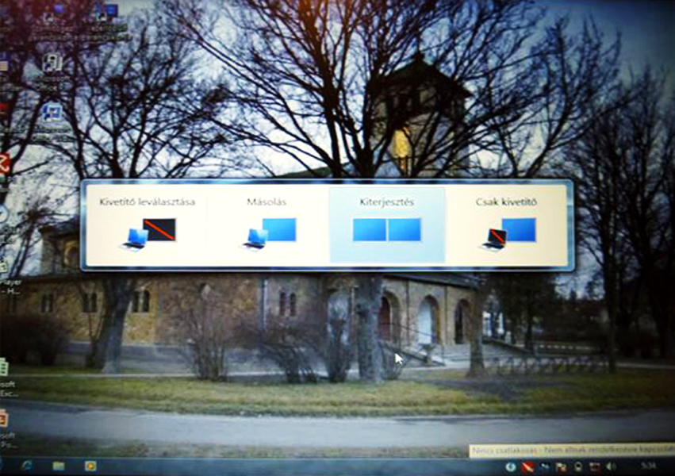

Alapítványunk irányításával kb. másfél éve folyik kísérlet a „Diatár” program bevezetésére.
„A kísérlet sikerült, de a számítógép meghalt.”
Röviden a történet:
Használt 13” képátlójú laptop és XP operációs rendszer, valamint használt projektor segítségével
kb. 30 méter VGA kábel közbeiktatásával építettük ki a hálózatot.
Földelési problémák miatt (a projektor és a laptop között csak a kábel földje volt az összeköttetés) mindkét eszköz
meghibásodott.
A laptopot javítani sem lehetett!
Újabb használtat kapunk ajándékba. Sajnos lassanként ez is tönkrement.
Az Egyházközség úgy döntött, hogy újat vásárol.
Az alapvető kiépítés változatlan maradt, csak a régi, XP alapú rendszert felváltotta egy új, Windows 7 alapú gép. A berendezés tökéletesen működik a templomunkban. A kántor is nagyon meg van elégedve.
A beállításokról, üzemeltetésről itt egy rövid leírás:
 Windows 7 Windows +P billentyű egyszerre történő lenyomása (a külön képernyők kiválasztása) Azt hallottam, hogy az F4 billentyű is megteszi, de én nem próbáltam ki.
Vetítő képernyő beállítás a programban (jobb oldalt).
(Csak akkor fogadja el a beállítást, ha mindkét „monitor” üzemel)
A laptop állványát (baloldali kép) segítő kezek készítették.
Később forgatható állványt kaptunk a számítógép alá. Így szükség szerint a karnagy (baloldali kép), vagy akár a kántor (jobboldali kép) vezérelheti a vetítést.
Megígérem, ha újabb „fejlesztést” hajtunk végre, beszámolok róla! (terveim már vannak).
Veres Mihály
- Bozóky Gyula Alapítvány Kuratóriumi elnök -
2012 június 11
{kind=link}
{kind=link}
{kind=link}
{kind=link}
{kind=link}
{kind=link}
{kind=link}